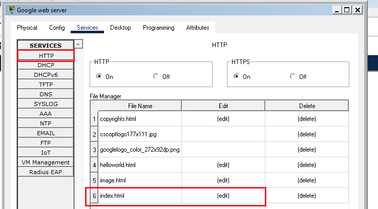

Fundamentos de redes
nas aulas de fundamentos de redes, agente usou o Cisco Packet Tracer para simular servidores e reder de diversas configurações como DHCP, DNS, HTTP etc...
Elementos, Componentes e Configuração de Rede Interna
Uma rede interna é composta por dispositivos como switches, computadores e servidores que se conectam para compartilhar dados e serviços. Utilizando o Cisco Packet Tracer, é possível simular redes e configurar a comunicação entre eles.
Configuração dos Servidores: DNS, HTTP e DHCP
Servidor DNS: Responsável por traduzir nomes de domínio em endereços IP, facilitando a localização de recursos na rede.
Servidor HTTP: Permite a hospedagem de sites e a comunicação com navegadores da web através do protocolo HTTP.
Servidor DHCP: Designa endereços IP automaticamente aos dispositivos na rede, otimizando a configuração.
Equipamentos Aplicados em Redes
Switch: Dispositivo que conecta diferentes dispositivos em uma rede local.

Roteador: Interconecta redes distintas e define rotas de dados.

Modem: Converte sinais digitais em analógicos para comunicação com a Internet.
Conceito de Servidor
Um servidor é um sistema que fornece recursos, dados ou serviços a outros computadores em uma rede. Os servidores podem ser dedicados a funções específicas, como hospedar sites ou gerenciar domínios.
DNS - O que é?
DNS (Domain Name System) é um sistema que associa nomes de domínio a endereços IP, permitindo que os usuários acessem websites através de URLs amigáveis.
HTTP - O que é?
HTTP (Hypertext Transfer Protocol) é o protocolo que permite a troca de informações entre navegadores e servidores web, sendo o padrão para transmissão de dados na Internet.
DHCP - O que é?
DHCP (Dynamic Host Configuration Protocol) é um protocolo que fornece automaticamente endereços IP para dispositivos em uma rede, facilitando a configuração de conexões.
Foto da Crimpagem
A crimpagem é o processo de conectar conectores RJ-45 aos cabos de rede. Veja abaixo uma imagem que mostra o processo:
Cabo de Rede - Pinagem
Os cabos de rede utilizam uma pinagem específica para garantir a correta transmissão de dados. Os padrões mais comuns são o T568A e o T568B.
Pinagem T568B: Branco/laranja, Laranja, Branco/verde, Azul, Branco/azul, Verde, Branco/marrom, Marrom.
Conceito do Modelo OSI
O modelo OSI (Open Systems Interconnection) é uma arquitetura em sete camadas que define padrões para a comunicação de sistemas em rede, facilitando a interoperabilidade.
Conceito do TCP/IP
O modelo TCP/IP é a base para a comunicação na Internet e se divide em quatro camadas: Aplicação, Transporte, Internet e Acesso à Rede. TCP e IP são os protocolos principais que definem as regras de transmissão de dados.